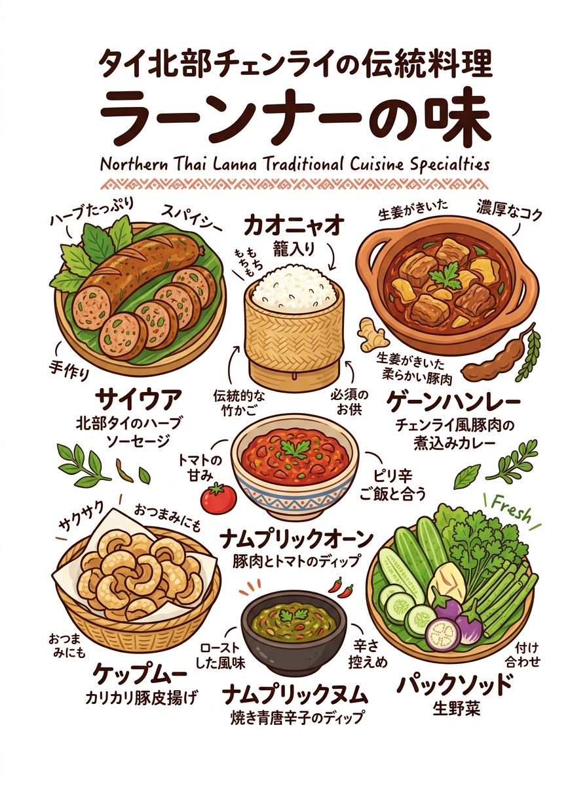
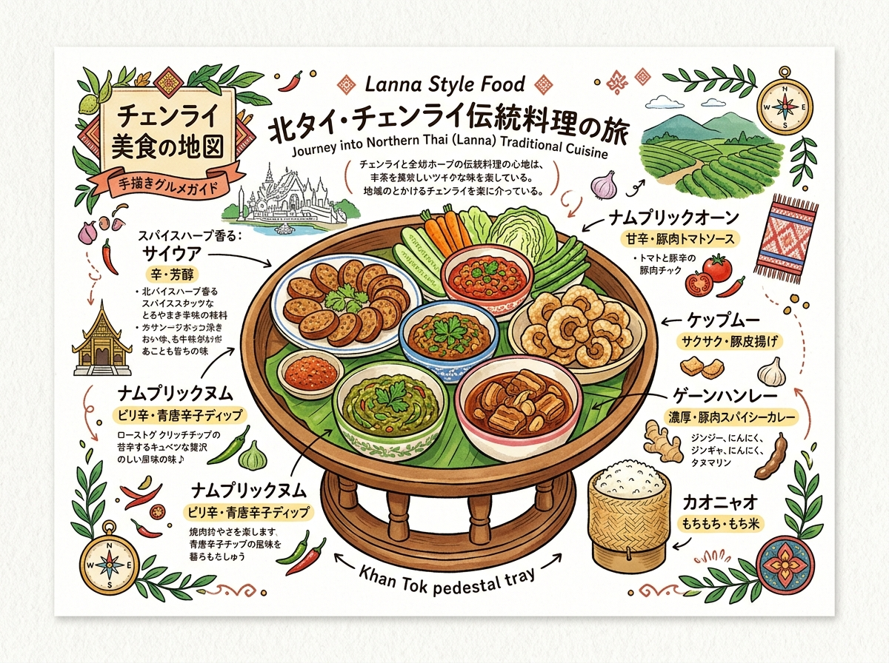

01
カオソーイ（カレーヌードル）
ข้าวซอย
ข้าว（米・麺）＋ซอย（細切り・刻む）。手打ち生地を細切りにした製法に由来。中国雲南・イスラム系隊商文化と融合。
辛さ★★☆。ココナッツミルクの濃厚なコクとスパイスの芳香。北部では珍しくココナッツミルクを使用。ウコン、ショウガ、特製カレースパイス。
カオソーイ、ゲーンハンレー、サイウアなど北タイ料理のスパイス使いと料理名の意味ガイド。
クリックすると拡大して詳細を確認・印刷できます。

旅行者の持ち歩き・印刷に適した手書き風インフォグラフィック。

位置関係やルート、全体像を俯瞰できるワイドデザイン。
現地調査および公的データに基づく最新詳細情報。
ข้าวซอย
ข้าว（米・麺）＋ซอย（細切り・刻む）。手打ち生地を細切りにした製法に由来。中国雲南・イスラム系隊商文化と融合。
辛さ★★☆。ココナッツミルクの濃厚なコクとスパイスの芳香。北部では珍しくココナッツミルクを使用。ウコン、ショウガ、特製カレースパイス。
แกงฮังเล
ビルマ語「hin lay（豚肉煮込み）」に由来。16〜18世紀のビルマ統治期に伝来・定着した伝統肉料理。
辛さ★★☆。ココナッツミルク完全不使用。タマリンドの柔らかな酸味、ヤシ糖の甘み、生姜の辛味が調和した甘酸っぱい濃厚シチュー風味。ポン・ハンレー香辛料。
ไส้อั่ว
ไส้（腸）＋อั่ว（ランナー方言で「詰める・挟み込む」）。豚の腸に具材を詰めたものの意。
辛さ★★★☆。炭火焼きのスモーキーな香ばしさと、レモングラスやコブミカン葉の鮮烈なハーブ香が弾けるジューシーな味わい。発酵の酸味はない。
น้ำพริกหนุ่ม
น้ำพริก（チリディップ）＋หนุ่ม（若唐辛子 / 辛味穏やかで細長い品種プリック・ヌム）。
辛さ★★☆。油・ココナッツ不使用。炭火で皮ごと直火焼きした青唐辛子と香味野菜の香ばしい燻煙香と、さっぱりとした辛味・旨味がストレートに味わえる。
น้ำพริกอ่อง
น้ำพริก（ディップ）＋อ่อง（ランナー方言で「水分が飛んで油が分離するまでじっくり炒め煮にする」調理法）。
辛さ★☆☆。完熟小粒トマトの爽やかな酸味・甘みと豚肉の旨味、トゥアナオ（発酵大豆）のコクが一体となった北タイ版ミートソース風ディップ。辛さ控えめ。
แกงแค
แกง（汁物）＋แค（ドックケー等の野草・山菜の総称）。森や自家菜園の野草を一鍋で煮込む滋味深いスープ。
辛さ★★★☆。ココナッツミルク不使用。多種野草のほろ苦さ、マクウェン（北タイ山椒）の柑橘系シトラス香と麻味（痺れ）、炒り米粉の香ばしさととろみ。
ลาบคั่ว / ลาบเมือง
ลาบ（叩き肉ハーブ和え）＋คั่ว（少量の油で炒る）。生肉の「ラープ・ディップ」に対し火を通した料理。
辛さ★★★☆。イサーン風と異なり【ライム等の酸味は一切不使用】。十数種の香辛料を配合した「プリック・ラープ」とマクウェンの重厚なスパイス香。
ขนมจีนน้ำเงี้ยว
ขนมจีน（米粉発酵麺）＋น้ำ（汁）＋เงี้ยว（シャン族 / キワタの花ドック・ンギョウ）。シャン族発祥の麺料理。
辛さ★★☆。ココナッツ不使用。豚骨出汁のコク、小粒トマトの酸味、トゥアナオの発酵アミノ酸の旨味、キワタの花の出汁が溶け込んだ赤く澄んだスープ。